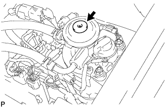

КЛАПАН РОГ (для моделей с DPF) > УСТАНОВКА |
| 1. УСТАНОВИТЕ ЭЛЕКТРИЧЕСКИЙ КЛАПАН УПРАВЛЕНИЯ РОГ В СБОРЕ |
Установите новую прокладку и электрический клапан управления РОГ на патрубок подачи воздуха.
Подсоедините разъем электрического клапана управления РОГ.
| 2. ПРЕДВАРИТЕЛЬНО УСТАНОВИТЕ ОХЛАДИТЕЛЬ РОГ С КЛАПАНОМ РОГ № 2 В СБОРЕ |
Установите новую прокладку на шпильки патрубка подачи воздуха.
Установите новую прокладку на шпильки головки блока цилиндров.
Установите переходник клапана РОГ на электрический клапан управления РОГ и патрубок подачи воздуха с помощью 2 гаек и болта A.
Предварительно закрепите охладитель РОГ на впускном коллекторе с помощью 2 болтов, обозначенных символом B на рисунке.
Предварительно закрепите охладитель РОГ на головке блока цилиндров с помощью 2 гаек, обозначенных символом C на рисунке.
| *1 | Новая прокладка | *2 | Переходник клапана РОГ |
| *3 | Охладитель РОГ | *4 | Электрический клапан управления РОГ |
| *5 | Патрубок подачи воздуха | - | - |
| 3. ЗАКРЕПИТЕ ОХЛАДИТЕЛЬ РОГ С КЛАПАНОМ РОГ № 2 В СБОРЕ |
Затяните 2 болта, обозначенные А, как показано на рисунке.
Затяните 2 гайки, обозначенные символом B на рисунке.
Установите опору патрубка подачи воздуха и закрепите 3 болтами, обозначенными символом C на рисунке.
Затяните 2 гайки и болт, обозначенные символом D на рисунке.
Установите топливопровод № 1 на опору патрубка подачи воздуха и закрепите болтом E.
| *1 | Опора патрубка подачи воздуха | *2 | Топливопровод № 1 |
Подсоедините разъем датчика давления топлива к топливной системе Common Rail.
Подсоедините 4 разъема форсунок и закрепите 3 зажима жгута проводов.
| 4. УСТАНОВИТЕ КРОНШТЕЙН КРЫШКИ ДВИГАТЕЛЯ № 4 |
Установите кронштейн крышки двигателя № 4 и закрепите его болтом.
| 5. УСТАНОВИТЕ ИЗОЛЯТОР КРОНШТЕЙНА КРЫШКИ ДВИГАТЕЛЯ |
 |
Установите 2 изолятора кронштейнов крышки двигателя и закрепите их 2 гайками.
| *1 | Захват |
| 6. УСТАНОВИТЕ КРОНШТЕЙН КРЫШКИ ДВИГАТЕЛЯ № 3 |
Установите кронштейн крышки двигателя № 3 и закрепите его 2 гайками.
| 7. УСТАНОВИТЕ КРОНШТЕЙН ЗАЖИМА ЖГУТА ПРОВОДОВ |
Установите кронштейн зажима жгута проводов.
Закрепите 2 зажима жгута проводов и подсоедините разъем свечи накаливания к кронштейну зажима жгута проводов.
Подсоедините разъем свечи накаливания.
| 8. УСТАНОВИТЕ ВАКУУМНУЮ ТРУБКУ № 1 |
Закрепите вакуумную трубку № 1 с помощью болта.
Подсоедините вакуумный шланг к впускному коллектору.
| 9. УСТАНОВИТЕ ПЕРЕПУСКНОЙ ШЛАНГ ОХЛАЖДАЮЩЕЙ ЖИДКОСТИ |
Подсоедините перепускной шланг охлаждающей жидкости № 5, обозначенный на иллюстрации буквой A.
Подсоедините перепускной шланг охлаждающей жидкости № 6, обозначенный на иллюстрации буквой B.
Подсоедините перепускной шланг охлаждающей жидкости № 8, обозначенный на иллюстрации буквой C.
Подсоедините перепускной шланг охлаждающей жидкости № 3, обозначенный на иллюстрации буквой D.
Подсоедините перепускной шланг охлаждающей жидкости № 4, обозначенный на иллюстрации буквой E.
Подсоедините перепускной шланг охлаждающей жидкости № 7, обозначенный на иллюстрации буквой F.
Закрепите 4 хомута перепускного шланга охлаждающей жидкости.

| *1 | Метка, нанесенная краской | - | - |
| *a | Верхняя сторона | *b | Левая сторона |
| 10. ПОДСОЕДИНИТЕ ПАТРУБОК ОХЛАЖДАЮЩЕЙ ЖИДКОСТИ ПОДОГРЕВАТЕЛЯ В СБОРЕ |
Установите патрубок отопителя и закрепите его болтом.
Закрепите хомут перепускного шланга охлаждающей жидкости.
| 11. УСТАНОВИТЕ ТОПЛИВНЫЕ ТРУБКИ ВЫСОКОГО ДАВЛЕНИЯ № 1, № 2 И № 3 В СБОРЕ |
Временно закрепите топливные трубки высокого давления № 1, № 2 и № 3 гайками штуцеров.
Установите 2 хомута топливной трубки высокого давления № 2 и закрепите их 2 болтами.
Установите хомут топливной трубки высокого давления № 3 и закрепите его 2 гайками.
С помощью разрезной головки на 17 мм затяните гайки штуцеров топливной трубки высокого давления со стороны топливной системы Common Rail.
С помощью разрезной головки на 17 мм затяните гайки штуцеров топливной трубки высокого давления со стороны форсунки.
| 12. УСТАНОВИТЕ ТРУБКУ ПОДВОДА ТОПЛИВА |
Установите трубку подвода топлива и временно закрепите ее гайками штуцеров.
Закрепите зажим топливной трубки высокого давления № 2 болтом.
С помощью разрезной головки на 17 мм затяните гайку штуцера трубки подвода топлива со стороны топливной системы Common Rail.
С помощью разрезной головки на 17 мм затяните гайку штуцера трубки подвода топлива со стороны нагнетающего топливного насоса.
| 13. УСТАНОВИТЕ ОПОРУ КОЛЛЕКТОРА С ЭЛЕКТРОВАКУУМНЫМ КЛАПАНОМ |
 |
Закрепите опору коллектора с электровакуумным клапаном 2 болтами и подсоедините вакуумные шланги № 4 и № 1.
| *1 | Метка, нанесенная белой краской |
| *2 | Синяя метка |
 |
Подсоедините 2 вакуумных шланга № 2, показанных на рисунке.
| *1 | Желтая метка |
| *2 | Клапан РОГ № 2 |
Подсоедините вакуумный шланг № 1.
Подсоедините 3 разъема электровакуумного клапана.
| 14. ПОДСОЕДИНИТЕ МАСЛЯНЫЙ БАЧОК ЛОПАСТНОГО НАСОСА В СБОРЕ |
 |
Временно закрепите масляный бачок лопастного насоса 3 болтами.
Затяните 3 болта масляного бачка лопастного насоса в порядке, показанном на рисунке.
| 15. УСТАНОВИТЕ ЭЛЕКТРОННЫЙ БЛОК ПРИВОДА ФОРСУНОК В СБОРЕ |
Закрепите электронный блок привода форсунок в сборе 2 болтами.
Подсоедините 4 разъема.
| 16. УСТАНОВИТЕ УПЛОТНЕНИЕ ФАРТУКА ЛЕВОГО ПЕРЕДНЕГО КРЫЛА |
Установите уплотнение фартука левого переднего крыла и закрепите его 5 фиксаторами.
| 17. УСТАНОВИТЕ ЛЕВОЕ ПЕРЕДНЕЕ КОЛЕСО |
| 18. УСТАНОВИТЕ КОРПУС ДРОССЕЛЬНОЙ ЗАСЛОНКИ ДИЗЕЛЬНОГО ДВИГАТЕЛЯ В СБОРЕ |
| 19. ПОДСОЕДИНИТЕ ПРОВОД К ОТРИЦАТЕЛЬНОМУ ВЫВОДУ АККУМУЛЯТОРНОЙ БАТАРЕИ |
| 20. ДОБАВЬТЕ ОХЛАЖДАЮЩУЮ ЖИДКОСТЬ ДВИГАТЕЛЯ |
Затяните пробку сливного крана радиатора вручную.
Затяните пробку сливного крана блока цилиндров.
Заполните радиатор охлаждающей жидкостью с увеличенным сроком замены "Super Long Life Coolant (SLLC)" от компании Тойота, залив ее в трубопровод B расширительного бачка.
| Параметр / Устройство | Заданные условия | |
| для моделей с автоматической трансмиссией | Для моделей с задним подогревателем | 14,9 литра (15,7 кварты США, 13,1 английской кварты) |
| Для моделей без заднего подогревателя | 13,1 литра (13,8 кварты США, 11,5 английской кварты) | |
| для моделей с механической трансмиссией | Для моделей с задним подогревателем | 15,0 литра (15,8 кварты США, 13,2 английской кварты) |
| Для моделей без заднего подогревателя | 13,2 литра (13,9 кварты США, 11,6 английской кварты) | |
Несколько раз сожмите рукой входной и выходной патрубки радиатора № 1 и № 2, а затем проверьте уровень охлаждающей жидкости.
Если уровень охлаждающей жидкости опускается ниже линии В, долейте охлаждающую жидкость SLLC Toyota до линии В.
Установите пробку расширительного бачка радиатора.
Установите вентиляционную пробку с помощью гаечного ключа.
Выпустите воздух из системы охлаждения.
Прогревайте двигатель, пока не откроется термостат. Когда термостат откроется, несколько минут прокачивайте охлаждающую жидкость.
Поддерживайте частоту вращения коленчатого вала двигателя на уровне 2500-3000 об/мин.
Несколько раз сожмите рукой входной и выходной патрубки радиатора, чтобы удалить воздух.
Остановите двигатель и подождите, пока охлаждающая жидкость остынет до температуры окружающего воздуха.
Когда охлаждающая жидкость остынет, убедитесь, что она находится на уровне отметки FULL.
Если уровень охлаждающей жидкости ниже отметки FULL, долейте SLLC от компании Тойота до этой отметки.
| 21. УДАЛИТЕ ВОЗДУХ ИЗ ТОПЛИВНОЙ СИСТЕМЫ |
|  |
С помощью ручного насоса, установленного на крышке топливного фильтра, удалите воздух из топливной системы. Продолжайте прокачку, пока сопротивление насоса при работе не возрастет.
Проверьте, запускается ли двигатель.
Если двигатель запускается, перейдите к следующему шагу.
Если запуск двигателя невозможен, прокачайте систему снова с помощью ручного насоса до повышения сопротивления насоса (см. процедуры выше). Затем запустите двигатель.
Выключите зажигание.
Подсоедините портативный диагностический прибор к DLC3.
Включите зажигание (IG) и портативный диагностический прибор.
Сбросьте коды DTC (Нажмите здесь).
Запустите двигатель.*1
 |
Войдите в следующие меню: Powertrain / Engine and ECT / Active Test / Test the Fuel Leak.*2
| *a | Для справки (испытание в режиме Active Test) |
Выполните следующее испытание 5 раз с интервалами включения/выключения 10 с: Active Test / Test the Fuel Leak.*3
После 5-го испытания в режиме Active Test дайте двигателю поработать на холостом ходу в течение не менее 3 мин.

Войдите в следующие меню: Powertrain / Engine and ECT / DTC.
Считайте текущие коды DTC.
Сбросьте коды DTC (Нажмите здесь).
Повторите операции с *1 по *3.
Войдите в следующие меню: Powertrain / Engine and ECT / DTC.
Считайте текущие коды DTC.
| 22. ПРОВЕРЬТЕ, НЕТ ЛИ УТЕЧЕК ОХЛАЖДАЮЩЕЙ ЖИДКОСТИ |
Заполните радиатор охлаждающей жидкостью и подсоедините приспособление для опрессовки системы охлаждения и проверки пробки радиатора.
Прогрейте двигатель.
С помощью приспособления для опрессовки системы охлаждения и проверки пробки радиатора увеличьте давление в радиаторе до 123 кПа (1,3 кгс/см2, 18 фунтов на кв. дюйм) и убедитесь, что давление не падает.
Если давление снижается, проверьте на наличие утечек шланги, радиатор и насос системы охлаждения. При отсутствии внешних утечек проверьте сердцевину нагревателя, блок цилиндров и головку.
| 23. ПРОВЕРЬТЕ, НЕТ ЛИ УТЕЧЕК ТОПЛИВА |
Выполните диагностику в режиме Active Test.
Подсоедините портативный диагностический прибор к DLC3.
Включите зажигание (IG).
Включите портативный диагностический прибор.
Войдите в следующие меню: Powertrain / Engine and ECT / Active Test.
Выполните диагностику в режиме Active Test.
| Дисплей портативного диагностического прибора | Испытываемое устройство | Диапазон регулирования | Замечание по диагностике |
| Test the Fuel Leak | Создание давления в топливной системе Common Rail для проверки наличия утечек топлива | Stop/Start (остановить/запустить) |
|
| 24. УСТАНОВИТЕ ЗАЩИТУ КАРТЕРА ДВИГАТЕЛЯ № 1 В СБОРЕ |
Установите защиту картера двигателя № 1 и закрепите ее 4 болтами.
| 25. УСТАНОВИТЕ НИЖНЮЮ ОБЛИЦОВКУ ПЕРЕДНЕГО БАМПЕРА |
Установите нижнюю накладку переднего бампера и закрепите ее фиксатором и 5 болтами.
| 26. УСТАНОВИТЕ ВЕРХНЕЕ УПЛОТНЕНИЕ КРОНШТЕЙНА РАДИАТОРА |
Установите верхнее уплотнение кронштейна радиатора и закрепите его 13 фиксаторами.